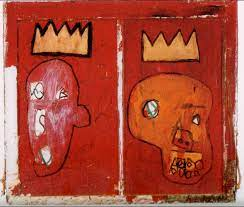
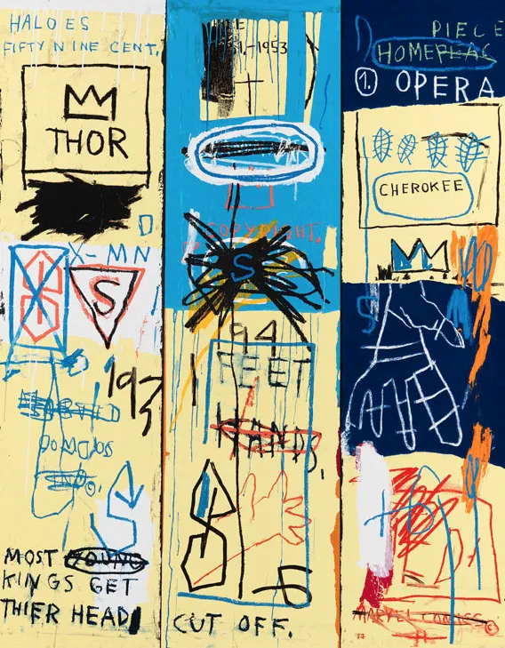

Basquiat became a challenge not only to the art world introducing the Neo-Expressionist Movement but to himself as he desired to owe homage to marginalized people. He often used the symbol of the three-pointed crown to challenge the notion of race and power. He would crown black heroes such as musicians, athletes, and writers. Basquiat revealed the crown would refer to them as royal-even saintly status as the world would never have.
"Red Kings" (1981-2)
Neo-Expressionism referred to a new, rough style of the reemergence of the human figure as Basquiat’s artwork were recognizable subjects mixed with abstract ideas. He would do several projects at once with as many art mediums and sources he had at his disposal. He was the face of the Neo-Expressionist movement as his art was profoundly original and at the same time rooted in a rich linguistic history.
"Charles The First" (1982)
"Trumpet" (1984)
Jean-Michel Basquiat, a driven and ambitious artist, depicted identity and oppression in his art facing challenges as a young, black man. We have seen how his powerful and eye-catching artwork formed from his chaotic childhood manifested into his messy yet calculated process. The face of the Neo-Expressionist Movement, Basquiat was an artist who was dedicated to his craft that drew on the problems faced by African Americans in the United State that are as relevant now as they were 40 years ago.If you would like to learn more about the amazing artist, Jean-Michel Basquait, I suggest visiting this website to learn more about his life, current and future exhibitions, and more.